4块GPU不是一块大GPU：4个独立内存空间加4个处理器，跑在某块卡上的kernel够不到别的卡上的权重和KV cache，任何跨卡依赖都要付一次传输或集合通信的代价。推理部署选并行策略，本质上就是在这种约束下做数据放置。
六种主流策略（数据并行、张量并行、流水线并行、上下文并行、专家并行、混合并行）各切分了工作负载的不同维度，也各引入不同的通信模式。下面逐个拆解：切分了什么、复制了什么、通信长什么样、解决哪类瓶颈，最后给出一套自上而下的实用决策框架。
4块GPU不是一块拥有4倍显存和算力的GPU，而是4个独立的内存空间加4个处理器。跑在某块GPU上的kernel，够不到存放在另一块GPU上的权重或KV cache数据块：任何跨设备的依赖，都必须经过一次传输，或者一次collective。collective指多个GPU共同参与的一次通信操作，比如all-reduce、all-gather。
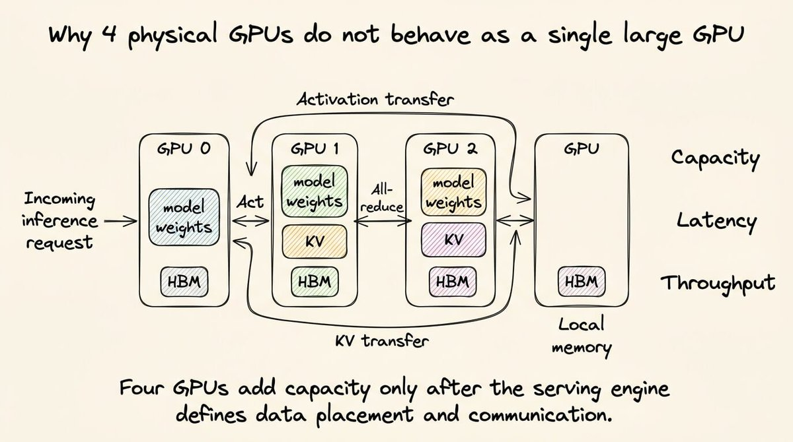
分布式推理的起点因此是数据放置：serving engine负责把权重、激活值、KV cache分配到各台设备上。请求路径上每出现一次跨设备依赖，就多一次传输或collective。工程问题的本质，是在"消除当前瓶颈"和"不引入超过收益的通信开销"之间取舍，选出最合适的放置方案。
比较每种策略，可以固定问五个问题：切分了什么状态？复制保留了什么？什么数据要跨互联传输？传输发生的频率？这个布局改善的是显存容量、请求延迟，还是吞吐量？六种策略逐个用这五个问题过一遍，差异一目了然。
后面的讨论固定在一个假设下：同一台4-GPU服务器，模型至少需要其中2块GPU才能放下。
LLM推理分两个阶段。Prefill处理prompt并构建它的KV cache，一次处理大量prompt token，跑的是大矩阵乘法，属于计算密集。Decode逐token生成后续token，每一步都要读取模型权重和不断增长的cache，执行小操作、反复读权重与KV数据，属于访存密集。
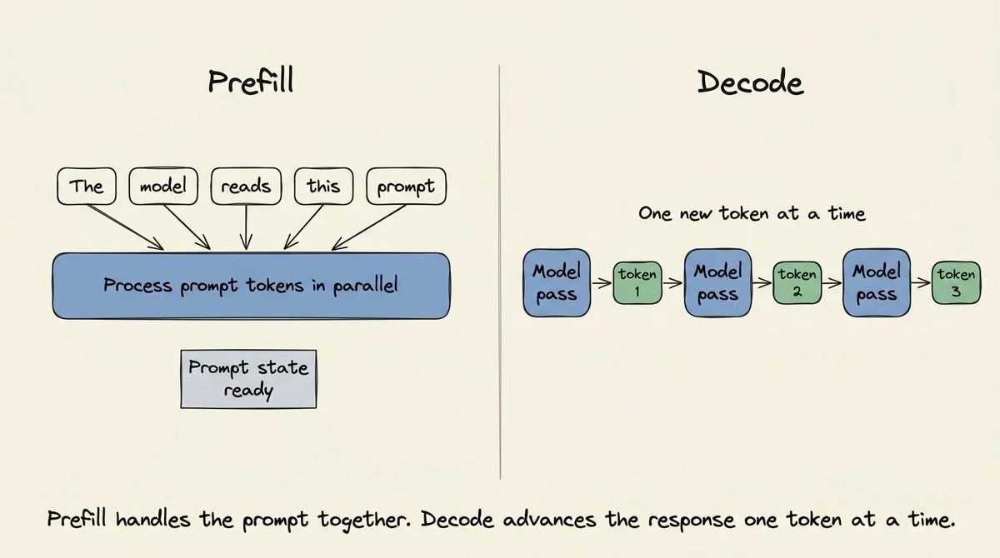
两个阶段用硬件的方式完全不同：对一个阶段有利的布局，可能伤害另一个阶段。做并行决策之前，先分清当前瓶颈卡在哪一个阶段。
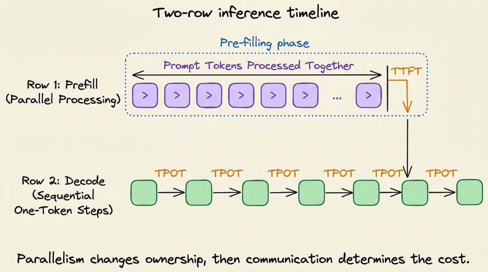
限制部署的资源有四类：参数显存（决定模型能不能放下）、KV-cache显存（决定能常驻多少token、撑多少并发请求）、GPU计算时间（本地矩阵运算）、通信时间（设备间的传输与collective）。
服务指标必须跟产品目标对齐：TTFT（首token延迟，看初始响应）、TPOT（每输出token时间，看流式输出速度）、请求吞吐量、token吞吐量（区分输入和输出）、goodput（只统计满足SLO的请求）。
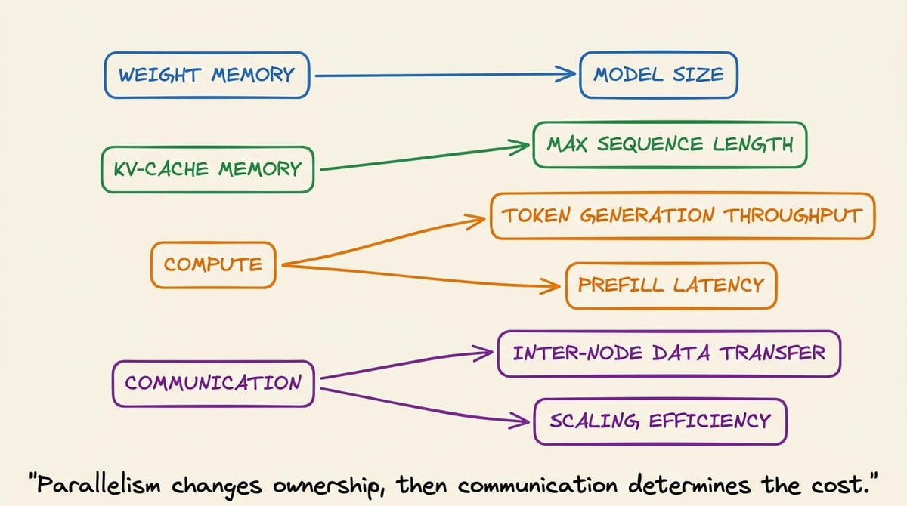
方法论上有一条硬规则：任何指标取平均都会掩盖长尾延迟，必须报告分位数。p95 TTFT表示95% 的请求都能达到的阈值。没有延迟约束的tokens/s会误导人：饱和的服务器可能报出很高的TPS，代价是请求在排队里等。
指标告诉你哪个服务目标失败了，资源测量告诉你瓶颈在哪里。下一步就是：怎么把推理工作切分到多块GPU上，去解决那个具体的瓶颈。这正是并行策略的作用：每种方法切分工作负载的不同部分，并引入不同的通信模式。看通信代价时，"频率"和"传输量"同等重要。
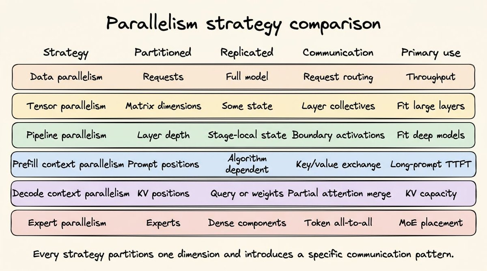
数据并行切分的是请求，不是模型。每个副本保存完整模型，各自有独立的调度器和KV cache，路由器决定每个请求进哪个副本的队列。
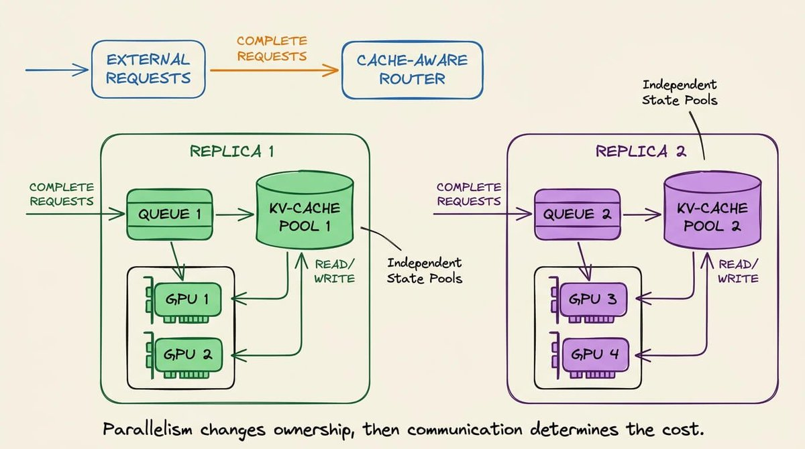
跟训练时的数据并行有一个关键区别：推理没有反向传播，也就不需要每次前向之后做梯度同步。
典型场景：一个2-GPU副本能满足延迟目标，但扛不住请求速率。在4-GPU服务器上再起第二个2-GPU副本，两个副本并发处理不同的请求，吞吐翻倍。
检查点一，显存：每个副本必须装下完整的2-GPU模型布局，服务器实际上要存两份模型。数据并行只有在"一个完整副本已经能放下"之后才可用，它解决不了模型放不下的问题。
检查点二，请求路由。副本多了，路由器要决定每个请求去哪个队列、进哪个KV池。round-robin把两个副本视为同等可用，无视其中一个队列更长、KV更少。工程规则是按队列延迟、可用KV容量、预估token数来路由。
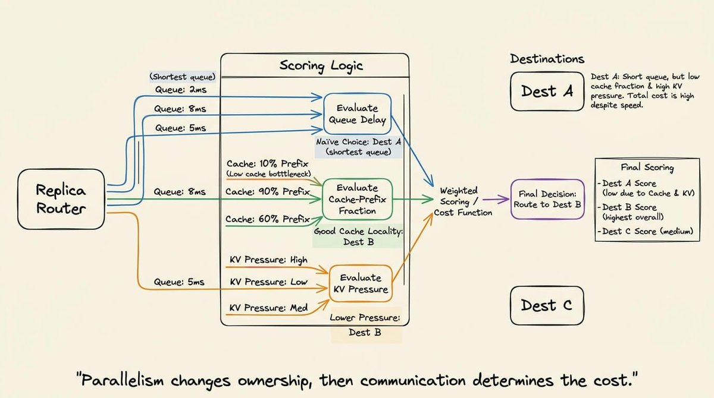
检查点三，准入容量。请求到达时只占少量KV显存，decode生成token后越占越多。路由器必须为这种增长预留容量，否则副本会接下一个"现在放得下、稍后放不下"的请求。
数据并行也有无效的时候：低流量下第二个副本闲置，对降低单个请求的延迟毫无帮助。数据并行是吞吐工具，不是延迟工具。
模型单卡放不下，但把最大的权重矩阵切开之后能放下，就轮到张量并行登场。数据并行解决不了这个问题，因为每个副本仍然需要完整模型。张量并行首先是模型放置工具，其次也能降低单个请求的计算时间。
经典构造来自Megatron-LM的两段投影：第一个投影产生中间激活，第二个投影把它映射回hidden维度。用2个rank时，第一个权重矩阵按列切（每个rank算不同的中间特征），第二个矩阵按行切（每个rank消费自己对应的特征切片），最后用all-reduce把各rank的部分结果求和合并。
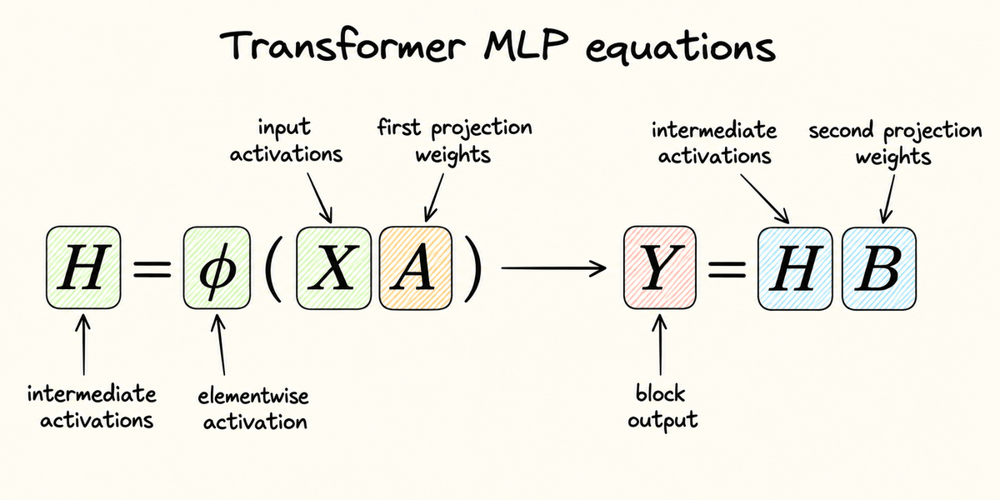
每个GPU用本地分片做一次矩阵乘，all-reduce把部分张量加总。这个collective完成之前，本层无法继续往下走。
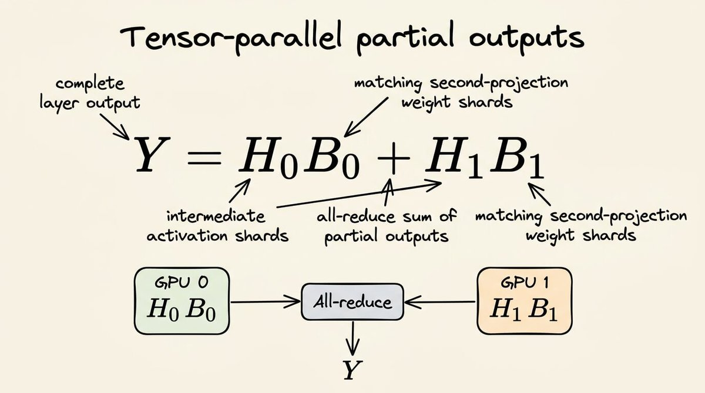
一个NumPy小实验可以验证切分正确性：每个rank用配套的矩阵分片算激活后的局部乘积得到部分结果，再求和（模拟all-reduce）。
import numpy as np\n\ndef tensor_parallel_output(x, a_shards, b_shards, activation=np.tanh):\n partials = [activation(x @ a) @ b for a, b in zip(a_shards, b_shards)]\n return sum(partials) # 模拟 all-reduce 求和\n\n# 输出 [[-3.294438, 1.406896]]，与未切分 MLP 在浮点容差内逐元素一致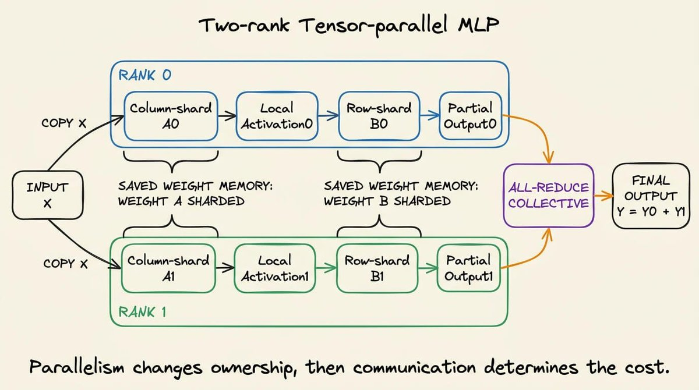
Attention同理：Q、K、V投影按head切分，输出投影再合并部分结果。具体布局取决于用的是MHA还是GQA，以及kernel实现。
几个术语：tensor-parallel group是共同服务一个请求的GPU集合，rank是组内的一个GPU进程，TP2就是2个rank，TP4是4个rank。
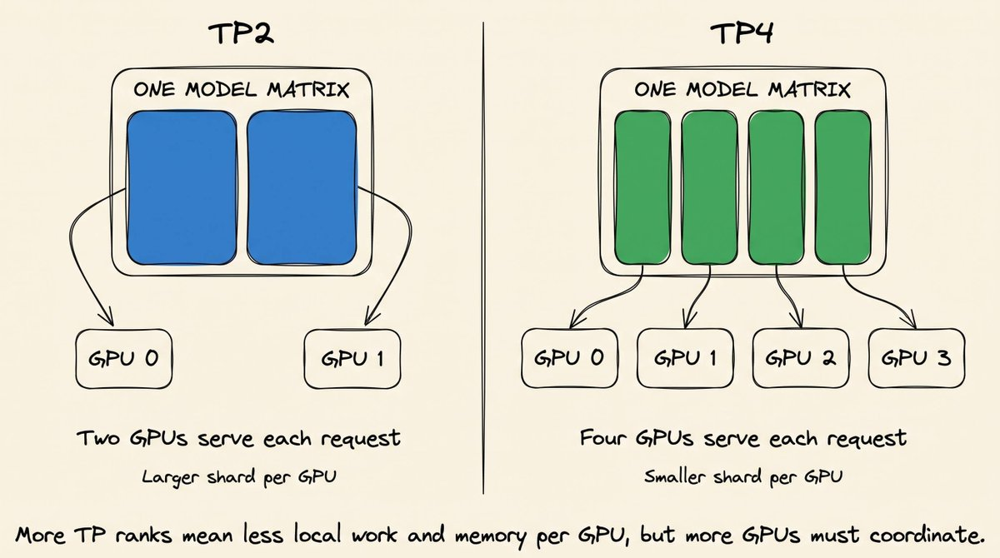
增大TP度数有trade-off。8192列的矩阵，TP2每个rank分4096列，TP4每个rank分2048列：每卡存得更少、矩阵乘法更小，但要把两倍数量的rank卷进collective里交换合并结果。
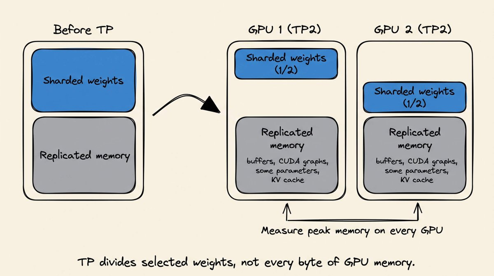
检查点一，模型是不是真的放下了。切分只减少被切权重矩阵的显存，其余分配（部分参数、临时buffer、CUDA graph、KV cache）可能仍在每卡复制，要实测峰值显存。
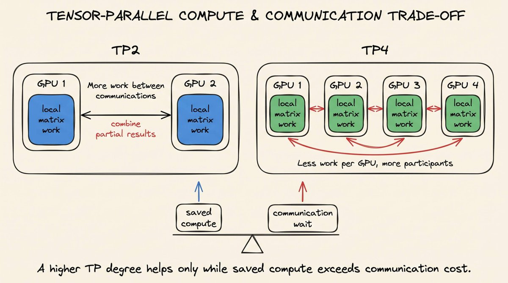
检查点二，通信耗时。张量并行的collective发生在每个transformer层内部做结果合并，慢互联会被放大。NVLink/NVSwitch和跨节点互联的代价完全不同。
检查点三，每个rank是否还有足够的计算量。GPU靠大矩阵乘法吃满并行度，TP度数越高本地矩阵越小，小到一定程度会利用不足。attention head数和量化布局也会限制切分度数。Decode比prefill更早触及这个下限：单个token的矩阵工作量远小于长prompt。
经验规则：用满足内存和延迟要求的最小TP度数。在4卡、模型需要2卡的例子里，从TP2起步；达标了，剩下2卡组成第二个TP2副本去扛吞吐；只有TP2仍不满足内存或单请求延迟时，才上TP4（TP4等于把4卡全押在一个请求上）。
一句话定位：用张量并行解决"单个副本放不下"，或者实测到的单请求计算瓶颈。
当张量并行的逐层collective必须跨过慢速互联，代价高到无法接受，流水线并行是另一种放置方案：模型必须横跨连接较弱的GPU时用它。
机制是把模型的层分组：stage 0跑前N层，把hidden states发给stage 1，最终stage返回输出。请求仍按顺序经过每个stage，但每个stage的权重始终留在本设备上。
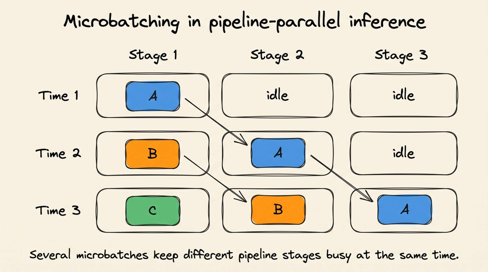
跟训练时的流水线有两个区别：推理没有反向传播；continuous batching可以让多组请求同时在流水线里流动。流水线并行以比张量并行低得多的通信频率解决模型放置问题，是跨节点或无高速P2P互联场景的候选。但它不降低单请求的计算延迟。
Microbatching给各stage提供独立的工作。在在线服务里，一个microbatch可能是不同的请求，continuous batching会不断改变microbatch的构成。
检查点一，有没有足够多的独立请求填满流水线。warm-up和drain阶段stage会空闲，microbatch太少会推高空闲比例。
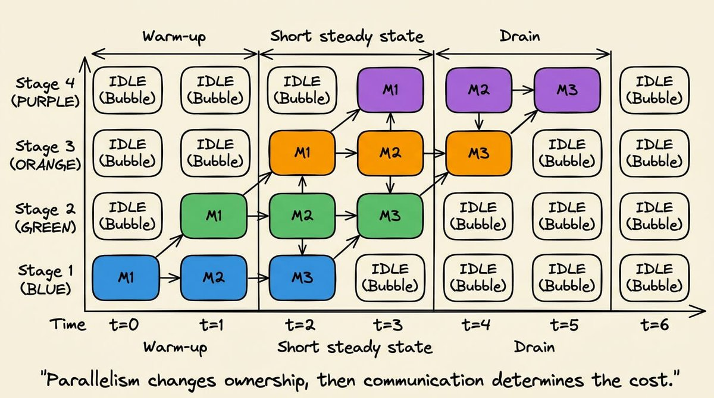
检查点二，stage负载均衡。80层模型用PP4，每stage 20层看似合理，但层数相等不等于耗时相等。工程规则：用实测的执行时间和显存占用去平衡各stage，而不是按层数均分。
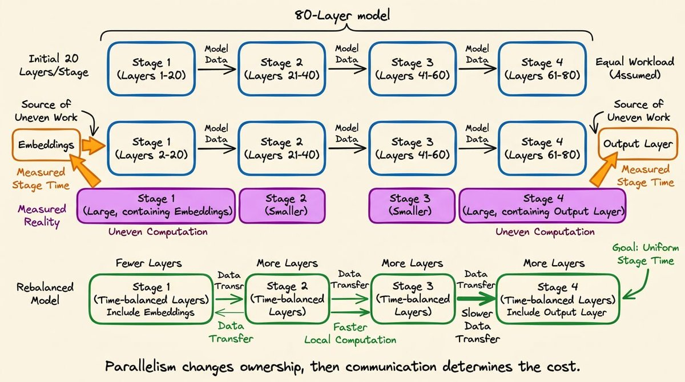
检查点三，activation缓冲与运维成本。请求在stage间流动期间，activation一直存活、占用显存。
落到4-GPU服务器上：只有模型确实需要全部4卡、且请求量足以填满流水线时，PP4才合理。如果硬件是"两对高速GPU对、之间是慢速链路"的结构，可以采用PP2（跨慢速边界）加每个stage内TP2（把频繁的collective留在高速链路内）的混合布局。
一句话定位：模型深度必须横跨设备、且stage边界传输量装得进延迟预算时，用流水线并行。
假设权重已经放得下，但长上下文请求仍在两项测试之一上失败：大prompt在prefill阶段达不到TTFT目标，或者KV cache占用过多显存、限制了并发数。上下文并行切分的是序列位置，不是模型权重。
两种失败对应两种机制：PCP（prefill context parallelism）切分输入prompt的计算，DCP（decode context parallelism）切分后续token要用的已存储KV历史。
把prompt的token切分到各rank，每个rank计算自己那段token的Q、K、V。
实现路线一：在每个rank上gather全部K、V，每个rank用本地query对全局K、V做attention。只有gather后的张量放得进显存时，这条路线才可行。
实现路线二：循环传递部分KV chunk，用ring-attention风格的算法合并各段的partial attention结果。避免了在每处物化完整序列，但需要多轮通信。
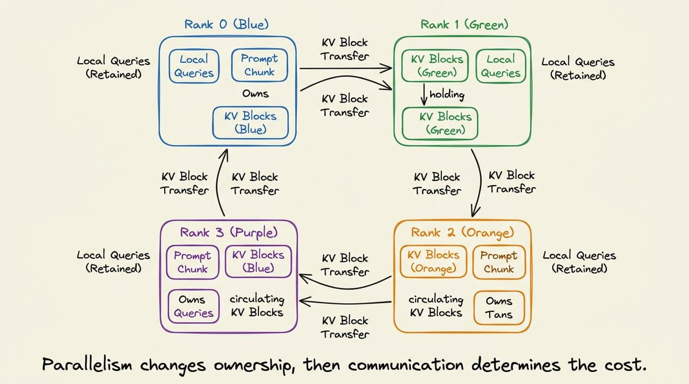
实践问题是找到PCP从"纯开销"转为"净收益"的临界点：按prompt长度实测TTFT。长prompt的attention计算量足够大，能摊掉通信开销；短prompt通常不行。
按序列位置切分已存储的KV cache：每个rank只对自己那段历史做attention，然后各rank合并partial attention输出和softmax统计量。
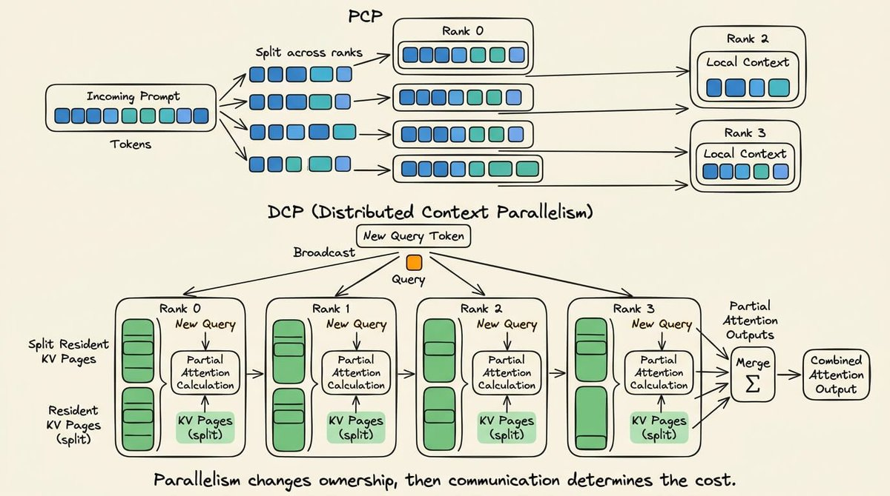
合并逻辑可以用一个小函数表达：每个partial上报本地最大值、指数和、加权value和；全局最大值取各本地最大值中的最大者；每个贡献先按exp(local_max - global_max) 重缩放，再做归约。
import numpy as np\n\ndef merge_attention_partials(partials):\n global_max = max(p.local_max for p in partials)\n num = sum(p.weighted_v * np.exp(p.local_max - global_max) for p in partials)\n den = sum(p.exp_sum * np.exp(p.local_max - global_max) for p in partials)\n return num / den\n\n# 输出 [0.769627, 0.779901]，与完整 attention 计算一致为什么需要这个最大值：指数可能溢出，减去全局最大值能保证所有指数项非正，保持softmax的数值稳定性。运行输出与完整attention计算一致，验证了切分KV历史不改变数学结果。
检查点一，显存：切分前后分别记录常驻KV token数和最大并发数。检查点二，decode代价：每个decoder层都要合并partial attention结果，可能推高TPOT。只有当限制因素是KV显存（而非权重显存或算力）时，DCP才有价值。
注意区分一个相关但不等同的概念：Megatron风格的sequence parallelism，通常是在normalization等算子周围切分activation。
落到4-GPU服务器上：普通对话继续跑基准的TP2副本，偶发的长上下文请求再路由到启用CP的布局上。PCP解决长prompt计算，DCP解决长历史存储，两者是独立的决策，分别对号入座。
只适用于含MoE层的模型。即使每个token只用少数几个expert，把所有expert都存在每块GPU上，仍可能吃掉绝大部分参数显存。
机制是把不同的expert放到不同的rank上，让一个模型实例把expert权重分散存放。运行时路由器为每个token选择expert，系统把该token的表示发往持有对应expert的rank，产生all-to-all流量。
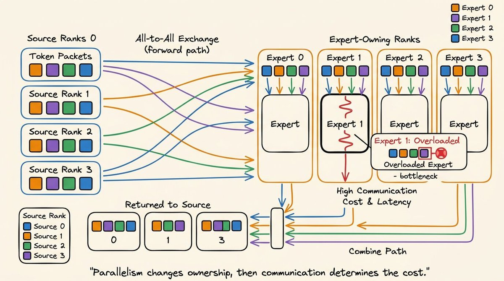
代价很直白：省了显存，但把数据相关的all-to-all通信放到了请求的关键路径上。
检查点一，放置：统计每rank的expert权重显存，并确认共享的attention、embedding、buffer、KV cache在各rank上仍放得下。检查点二，路由流量：跟dense的张量并行不同，传输字节数取决于token的路由结果，是数据相关的、动态变化的。检查点三，负载不均：token在各expert间的分布可能严重倾斜，而collective要等最慢的那个完成。看平均负载会掩盖掉队者，必须测量每个expert的最大token数、本地expert计算时间这类尾部指标。
4卡上的典型布局：每卡放四分之一的expert，attention部分仍用TP或DP。适用条件是expert权重正是放不下的主因，且路由保持相对均衡。
还有灵活性：attention层和expert层不必用同一切分。dense的attention可以用DP/TP，expert层用EP。
一句话定位：用专家并行解决expert权重放置问题，并用每rank的路由与不均衡指标持续验证。
现实里单一并行方式往往只解决部署问题的一部分：张量并行让模型在节点内放下，流水线并行把它扩展到跨节点。混合布局把这些选择组合起来，但每增加一个维度，都会引入自己的一套调度或通信开销。
计数规则：对独立的dense模型组，总worker数等于数据并行度乘流水线并行度乘张量并行度。部分上下文并行方法会复用已有rank，expert组也可能与数据组相互作用。
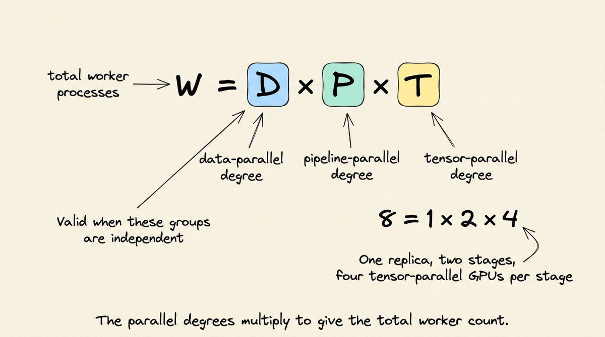
拓扑匹配示例：8卡跨两个4-GPU节点，节点内链路带宽高、延迟低。把频繁的逐层collective留在节点内（TP在节点内），只有stage边界的activation跨慢速网络（PP跨节点）。如果模型4卡放得下，另一个有吸引力的布局是每节点内TP4、节点间DP2。
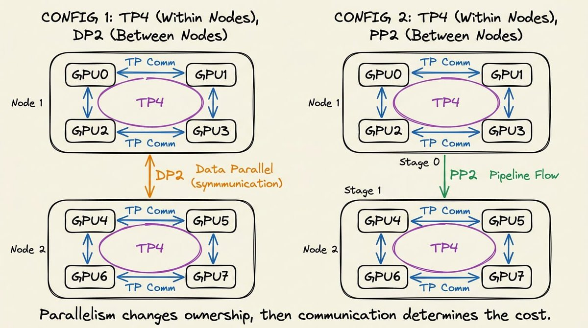
构造有推荐顺序：先选让每stage放得下的最小TP组；只有模型必须跨慢速边界时才加PP；等一个完整模型实例放下之后再加DP。这个顺序能避免常见错误：在搞清楚每个维度解决哪种资源瓶颈之前，就盲目把并行度乘起来。
Prefill/decode解耦是独立维度：两阶段需要不同硬件或不同扩缩容节奏时，为每阶段设独立的worker池（prefill池偏向大prompt的大矩阵运算，decode池偏向小访存操作）。但解耦不替代TP/PP/CP：每个池内部仍然需要模型放置方案。
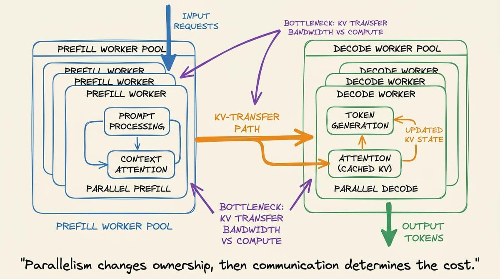
成功标准只有一条：每一种通信模式都必须与物理网络拓扑匹配。
使用方法：自上而下走一遍决策树；一旦选中能解决实测瓶颈的最小改动，就停下来做benchmark，然后回到顶部重新评估。不要把所有并行模式叠满：既难以归因，又可能在没解决任何问题的情况下徒增通信。
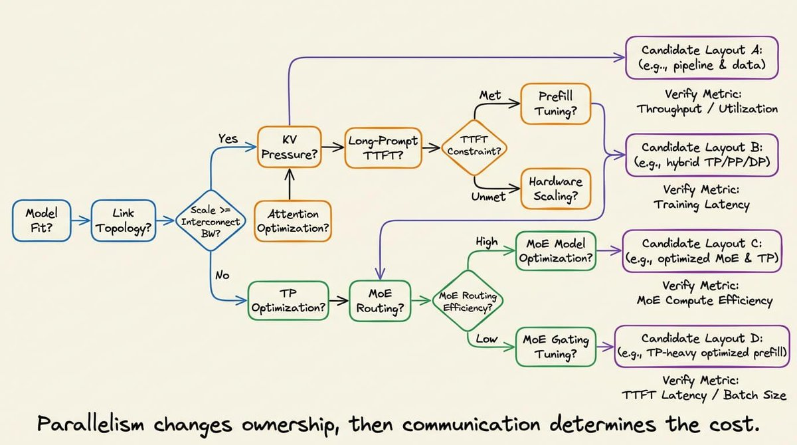
决策树第一问：单个GPU能否在保留KV-cache容量的前提下放下一个完整副本？能，从单副本起步；流量大到需要第二个调度器时，再加数据并行。
放不下：找到能工作的最小张量并行度，并实测decode延迟。模型必须跨节点：TP留在更快的节点内链路，跨节点测试PP。
长prompt是独立分支：大输入长度下TTFT不达标时评估PCP；KV显存限制活跃请求数量或长度时评估DCP。MoE模型多一个分支：expert权重是放不下的主因，就在跟踪token路由与不均衡指标的前提下测试EP。
总原则：只有测量数据指出了某种资源瓶颈，才启用对应该瓶颈的并行模式。先定位受限资源，再选通信模式与可用网络匹配的切分方式。并行通常是放置决策，而不是"堆GPU数量"的设置。
每次切分都会引入通信、同步或调度开销，省下的显存和算力必须大于这些开销。最简单的、能同时满足延迟与吞吐目标的布局，就是最好的布局。
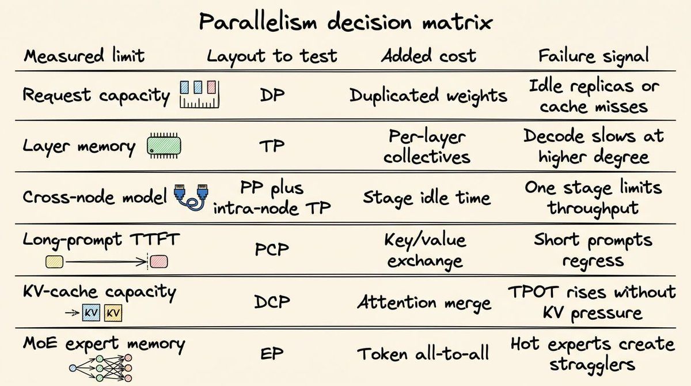
参考：https://x.com/_avichawla/status/2107427400779026843